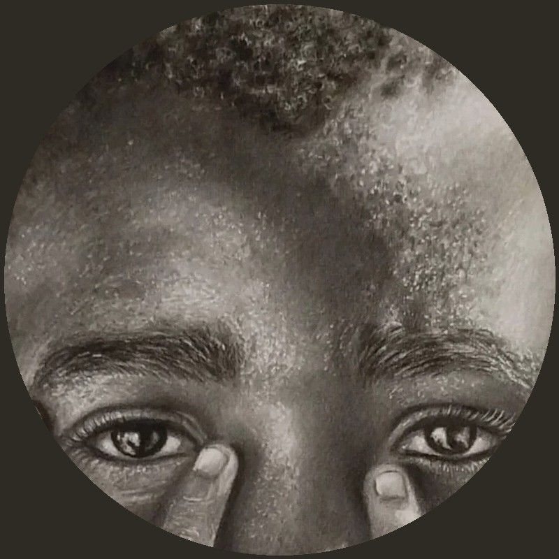

Samuel Guerrero malt. Auf OFFFEN zeigen wir mit seiner Zustimmung sein Werk „homenaje a la mujer del armiño“, eine Hommage an Leonardo da Vincis „Dame mit dem Hermelin“. Mehr von ihm findest du auf seinem Instagram-Kanal.Samuel Guerrero paints. On OFFFEN we show, with his consent, his work “homenaje a la mujer del armiño”, a homage to Leonardo da Vinci’s “Lady with an Ermine”. You will find more of his work on his Instagram channel.Samuel Guerrero pinta. En OFFFEN mostramos, con su consentimiento, su obra «homenaje a la mujer del armiño», un homenaje a «La dama del armiño» de Leonardo da Vinci. Encontrarás más de su obra en su canal de Instagram.
- instagram@samuelguerrero159
- kanalchannelcanalweiter zu seinem kanal →go to his channel →ir a su canal →
jede person entscheidet selbst, was hier steht.each person decides what appears here.cada persona decide qué aparece aquí.